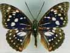

オオムラサキ
オオムラサキをとるのにあみはいらん。大阪府立池田高校生物部の先輩（せんぱい）ter.さんがそう言って教えてくれたのが箕面市の下止々呂美でした。今から25年ほど前のことです。クヌギの樹液（じゅえき）にたくさん集まっているので指でつまむんでとるそうです。かつてはそれほど多く見られたようです。
行ってみると、指でつまむほどではありませんでしたが下止々呂美ではごくあたり前のチョウでした。のんびり台場クヌギの下で待っていると次々と飛んできました。時間のとりやすい夏休みのころに行ったのでぼろぼろのものが多かったのですが、めすの大きなことに感動しました。標本にするとき、むねが大きいので押さえることに抵抗（ていこう）がありました。
はじめてオオムラサキの幼虫をとったのも、下止々呂美でした。その時はどのようなエノキをさがしていいのか分かっておらず、西山口のバス停の横にあったあまりふとくないエノキの下から幼虫を見つけだしました。今から思うと、よくあの細い、車のはね上げた土でよごれた、しかもしめり気の少ないエノキに幼虫がいたものです。
オオムラサキは、止々呂美のあたりまで行かないと採集できない。しばらくはそう思っていました。ところが北摂地域のチョウを調べておられるsat.さんやnab.さんの話をうかがってみると、池田市や川西市の周辺の山には多くはないが残っているとのことでした。
池田市内の五月山で確かめてみると、あるていど環境（かんきょう）がととのっている場所では幼虫を見つけることができました。成虫を見ることが少ない場所でも生き続けてているものです。
「生き物たちのページ」にもどる